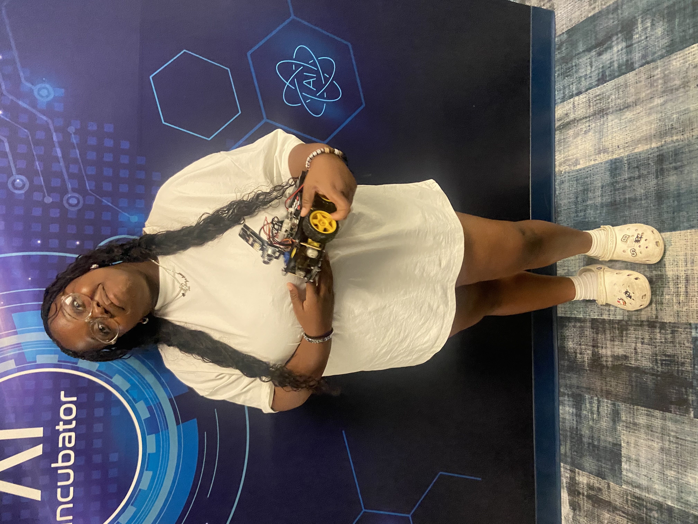

About Me
I am a 11th grader at South Broward Highschool. I am in the BC Trio Upward Bound Program. I am from Amercia. I enjoy swimming, music, dancing, and reading.
Trio 24 Summer Classes
- American Sign Language
- SAT Reading
- SAT Math
- Financial Literacy
- Robotics and Coding
Projects
ASL Project
Here is my video for ASL
Coding Pictures
Here are my pictures from coding
